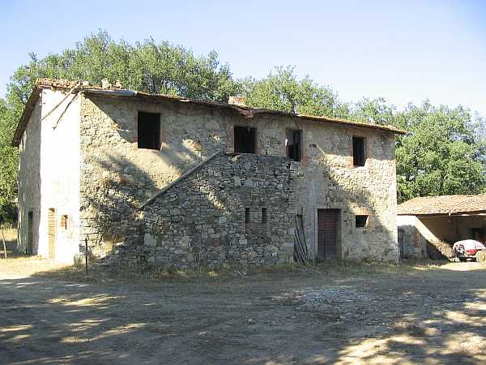

Quercegrossa (Ricordi e memorie)
CAPITOLO I - LUOGHI E PODERI
(POGGIAGRILLI)
Cliccami per ritornare all'Indice poderi
Vai all'Indice dei Capitoli
POGGIAGRILLI

Figlio della divisione delle terre dei poderi che fu intrapresa da molti proprietari all’inizio del Novecento, il podere di Poggiagrilli venne edificato nell’anno 1921/22 e la famiglia Bianciardi che lo doveva rinnovare nel marzo 1922 attese alcuni mesi abitando provvisoriamente nella fattoria di Petroio, dei Pallini, al quale Poggiagrilli apparteneva. Venne costruito a poche centinaia di metri da Petroio sulla strada per Viareggio e prese il nome dal luogo e dal borro detti Poggio ai Grilli, di antica memoria: nel 1735 le Monache della Madonna danno in enfiteusi a Giovanni Francesco Andreucci un pezzo di terra boschiva di staia dieci in circa (1,3 ettari) nel comune di Petroio detto “Poggio a Grilli” delle ragioni del podere di Gaggiola.
L’edifico a pianta rettangolare aveva una scala esterna che portava al piano superiore dove si trovavano la cucina e le camere. Alla base della scala l’ambiente adibito a forno. Dietro casa la stalla, l’ovile, il castro dei maiali e tanto di fontone. Le terre di sua competenza vennero smembrate dai poderi della fattoria, ma soprattutto dal podere Paradiso.
I Bianciardi furono l’unica famiglia colonica ad abitarvi e da quando lo lasciarono nel 1962 il fabbricato è caduto in rovina. Costruito un po’ in autonomia con la rena del Bozzone, cominciò ben presto a mostrare difetti agli intonaci che si scrostavano e altri inconvenienti, come ricorda l’anziano Lorenzino Bianciardi: "La costruzione era fatta male con tanta rena e poca calce e cascavano gli intonaci". Il podere di Poggiagrilli raggiungeva un’estensione di circa venticinque ettari, con tanto bosco. In sostanza un terreno "mezzo e mezzo", non molto produttivo, ma con vino buono e abbondante e la produzione si aggirava sui 40/50 ql. annui. Di grano si raccoglievano 50 ql. scarsi. Prima della guerra tribbiavano con uno di Vignaglia, gli ultimi anni col Mori di Quercegrossa. Nella stalla un paio di vacche, e un paio di bovi nel settembre per la coltratura. A Poggiagrilli tenevano dieci/quindici pecore, una scrofa e quattro/cinque maiali da ingrasso che portavano nel bosco. Ammazzavano un maiale all’anno. La luce venne allacciata nel dopoguerra, intorno al 1950.
Il forno dei Bianciardi con accanto il bollitore dell'acqua
La capanna di Poggiagrilli
La strada che conduceva a Petroio
Capitolo successivo Poggiobenichi
Inizio pagina
Vai all'Indice dei Capitoli
|